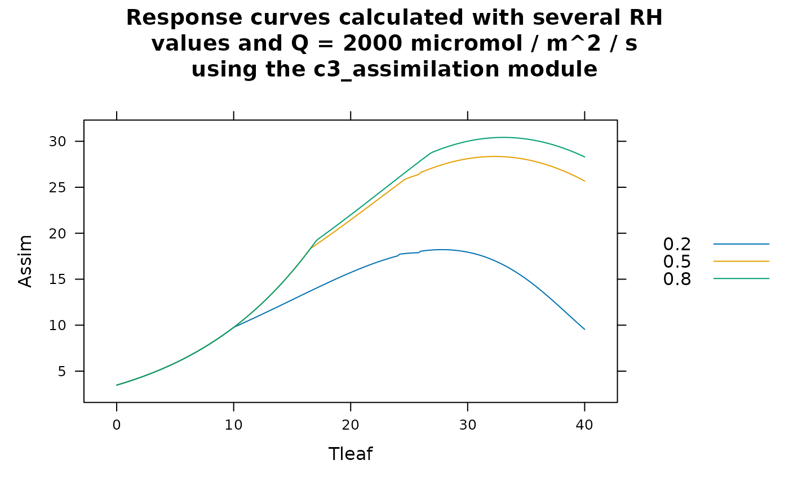

BioCro module functions
modules.Rdmodule_info returns essential information about a BioCro module.
evaluate_module runs a BioCro module using a list of input quantity
values.
quantity_list_from_names initializes a list of named numeric elements
from a set of names.
module_response_curve runs a BioCro module repeatedly with different
input quantity values to produce a response curve.
Usage
module_info(module_name, verbose = TRUE)
evaluate_module(module_name, input_quantities)
quantity_list_from_names(quantity_names)
module_response_curve(module_name, fixed_quantities, varying_quantities)Arguments
- module_name
A string representing the name of one BioCro module
- verbose
A boolean indicating whether or not to print information to the R console
- input_quantities
A list of named numeric elements representing the input quantities required by the module; any extraneous quantities will be ignored by the module
- quantity_names
A vector of strings
- fixed_quantities
A list of named numeric elements representing input quantities required by the module whose values should be considered to be constant; any extraneous quantities will be ignored by the module
- varying_quantities
A data frame where each column represents an input quantity required by the module whose value varies across the response curve
Details
By providing avenues for retrieving information about a module and evaluating
a module's equations, the module_info and evaluate_module
functions form the main interface to individual BioCro modules from within R.
The quantity_list_from_names function is a convenience function for
preparing suitable quantity lists to pass to evaluate_module.
The module_response_curve function provides a convenient way to
calculate a module response curve. To do this, a user must specify a module to
use, the values of any fixed input quantities (input_quantities), and
a sequence of values for other quantities that vary across the response curve
(varying_quantities). The returned data frame includes all the
information that would be required to reproduce the curve: the module name,
all inputs (including ones with constant values), and the outputs. Note: if
one quantity q is both an input and output of the module, its input
value will be stored in the q column of the returned data frame and its
output value will be stored in the q.1 column; this renaming is
performed automatically by the make.unique function.
Value
- module_info
An
invisiblelist of several named elements containing essential information about the module:module_name: The module's nameinputs: A character vector of the module's inputsoutputs: A character vector of the module's outputstype: The module's type represented as a string (either 'differential' or 'direct')euler_requirement: Indicates whether the module requires a fixed-step Euler ODE solver when used in a BioCro simulationcreation_error_message: Describes any errors that occurred while creating an instance of the module
- evaluate_module
A list of named numeric elements representing the values of the module's outputs as calculated from the
input_quantitiesaccording to the module's equations.- quantity_list_from_names
A list of named numeric elements, where the names are set by
quantity_namesand each value is initialized to 1.- module_response_curve
A data frame where the first column is the name of the module that produced the response curve and the remaining columns are the module's input and output quantities. Each row corresponds to a row in the
varying_quantities.
Examples
# Example 1: printing information about the 'c3_assimilation' module to the R
# console
module_info('c3_assimilation')
#>
#>
#> Module name:
#> c3_assimilation
#>
#> Module input quantities:
#> Qp
#> Tleaf
#> rh
#> vmax1
#> jmax
#> tpu_rate_max
#> Rd
#> b0
#> b1
#> Gs_min
#> Catm
#> atmospheric_pressure
#> O2
#> theta
#> StomataWS
#> water_stress_approach
#> electrons_per_carboxylation
#> electrons_per_oxygenation
#>
#> Module output quantities:
#> Assim
#> Gs
#> Ci
#> GrossAssim
#>
#> Module type (differential or direct):
#> direct
#>
#> Requires a fixed step size Euler ode_solver:
#> no
#>
# Example 2: getting the inputs to the 'thermal_time_linear' module, generating
# a default input list, and using it to run the module
info <- module_info('thermal_time_linear', verbose = FALSE)
inputs <- quantity_list_from_names(info$inputs) # All inputs will be set to 1
outputs <- evaluate_module('thermal_time_linear', inputs)
# Example 3: calculating the temperature response of light saturated net
# assimilation at several values of relative humidity in the absence of water
# stress using the 'c3_assimilation' module and soybean parameters. Here, the
# leaf temperature and humidity values are independent of each other, so we use
# the `expand.grid` function to form a data frame of all possible combinations
# of their values.
rc <- module_response_curve(
'c3_assimilation',
within(soybean_parameters, {Qp = 2000; StomataWS = 1}),
expand.grid(
Tleaf = seq(from = 0, to = 40, length.out = 201),
rh = c(0.2, 0.5, 0.8)
)
)
caption <- paste(
"Response curves calculated with several RH\nvalues and Q =",
unique(rc$Qp),
"micromol / m^2 / s\nusing the",
unique(rc$module_name),
"module"
)
lattice::xyplot(
Assim ~ Tleaf,
group = rh,
data = rc,
auto = TRUE,
type = 'l',
main = caption
)
